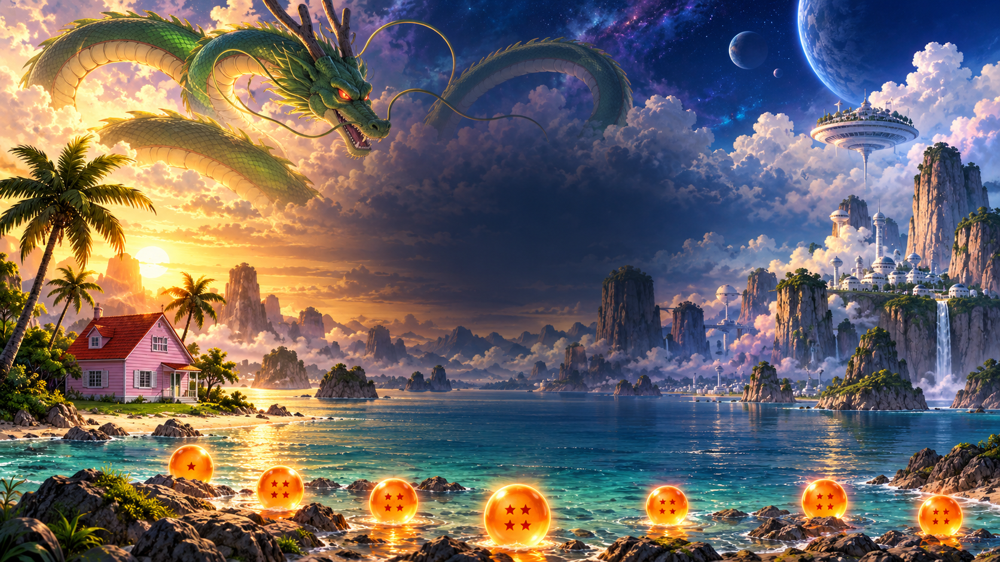

A MINECRAFT JAVA FAN ADVENTURE
A small island.
An infinite horizon.
Begin on Earth. Cross the stars to Namek.
Train, transform, and discover what lies beyond.
Original title artwork · the game uses Minecraft block worlds
POWER IS ONLY THE BEGINNING
A world worth
getting stronger for.
Built around DragonMine Z’s native races, techniques, story and animated combat. Horizons adds a connected Earth atlas, original divine and historical maps, supporting expeditions, recurring rivals, and new animated artwork for Beerus and Whis.
6native playable races
4original explorable maps
CHOOSE YOUR NEXT DESTINATION
Earth is just the beginning.
Additional native destinations: Other World, Sacred World of the Kai, and the Room of Spirit and Time. Native travel, death and training rules apply. These maps are fan adaptations, not a one-to-one recreation of the anime.
YOUR RACE. YOUR TRAINING. YOUR STORY.
Find your fighting spirit.
Complete character creation in V. Your native race controls your body and progression. Your Horizons expedition role is a separate choice.
YOUR ADVENTURE STARTS HERE
Ready to power up?
Dragon Ball Horizons
Importable pack + field guide. Launchers fetch the pinned mods from their original authors. A Minecraft Java account and 64-bit Java 17 are required.
Download Windows bundle ↓Already have Prism? Get the .mrpack- 01
Install Prism Launcher
Download Prism for Windows ↗, then sign in with your Minecraft Java account.
- 02
Import the pack
Extract the Windows ZIP. In Prism: Add Instance → Import → choose the enclosed .mrpack. Select Java 17. Start with 6 GB RAM on a 16 GB PC; adjust after testing.
- 03
Create your warrior
Create a Normal Survival world. Press V and complete DragonMine Z’s character creation. Its native quests live in the same menu.
- 04
Embark on Horizons
Press J for the guide, run
/story, choose a supporting role, then/story embark. You’ll arrive at Kame House.
LESS GUESSING. MORE ADVENTURE.
Your field guide.
How do I finish the first quest?
At Kame House, run /story contact, then /story train. Stay crouched on solid ground for 10 seconds within four blocks of your starting point. Bring four bread from your starter supplies and return beside your liaison. Right-click them, then choose a completion option. /story lists any missing objectives.
Where are my powers and transformations?
Press V for native stats, skills, forms and techniques. Right-click native mentors to see lessons and prerequisites. Charge with C, use the native action key G, fly with F, dash with R, and lock on with Z. Check Controls → DragonMine Z for bindings and conflicts. A Horizons quest title does not unlock a native power.
How do Earth and Namek work?
Horizons Earth is an original fixed map of recognizable landmarks. The normal Overworld remains the home of the native Z saga and Earth Dragon Ball generation. /horizons home returns from a Horizons map to your saved departure point. Namek is the native DragonMine Z dimension. /horizons atlas lists travel gates, locations and fares.
Can friends join from another house?
Yes, the pack includes e4mc. Everyone imports the same release. The host opens Esc → Open to LAN, then shares the public address shown in chat. Friends use Multiplayer → Direct Connection. Keep the host online; later sessions may have a new address. A two-account internet join still needs acceptance testing for this release.
Which stories can I play?
The native journal in V contains the Z saga and additional side stories. Horizons adds four supporting roles—Earth Defender, Saiyan Voyager, Namek Guardian and Divine Student—sharing a 16-chapter chronology with personal rewards, decisions and memories. The custom assignments and arena retellings are adaptations, not replacement canon.
What should I expect from the gods?
Meet native Beerus and Whis mentors in an original floating tree-palace realm, with new original animated visual assets. King Kai and Old Kai remain native teachers elsewhere. Gods and angels are not selectable native races. The World of Void is an exhibition map, not a complete Tournament of Power, and Planet Vegeta is a historical recreation.
How can I tune visuals or enable AI dialogue?
Use the native V configuration for camera settings and animations. Shaders start off; enable the included Complementary preset through Oculus if your PC handles it. For optional local NPC dialogue, the imported instance contains a Windows helper in dbh-tools. It uses a host-local Ollama model; ordinary authored dialogue works without AI. AI cannot change quests or grant powers.